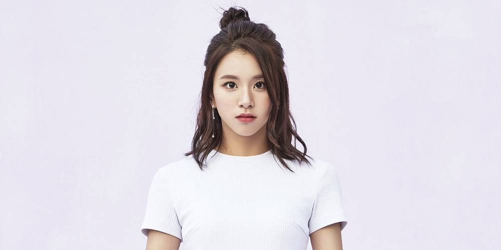
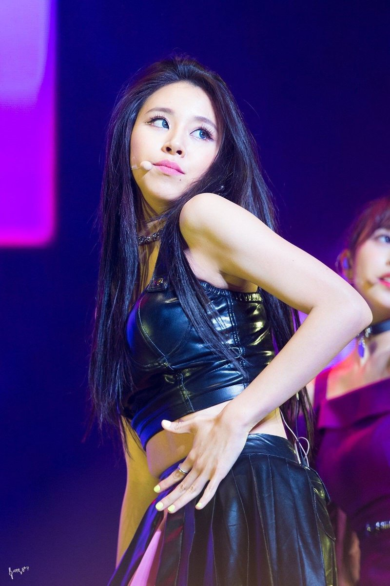

Chaeyoung

Ранняя жизнь и образование
Сон Че Ён (кор. 손채영; род. 23 апреля 1999 года, более известная как Чеён) – южнокорейская певица и рэпер. Является главным рэпером и бэк-вокалисткой гёрл-группы Twice.Сон Че Ён родилась 23 апреля 1999 года в Сеуле, Южная Корея. У неё в семье, помимо родителей, есть младший брат Чонхан. Будучи шестиклассницей, Чеён поступила в танцевальную академию. Она занималась там в течение года, прежде чем 6 июня 2012 года присоединилась к JYP Entertainment в качестве трейни. В предебютный период она снялась в видеоклипах «Only You» miss A и «Stop Stop It» Got7. В марте 2016 года вместе с Дахён поступила в старшую школу искусств Ханлим. 12 февраля 2019 года вместе с Цзыюй окончила её.
Карьера и 6teen

В апреле 2015 года стало известно, что JYP совместно с Mnet приступит к съёмкам реалити-шоу «Шестнадцать» (англ. Sixteen), где шестнадцать трейни агентства будут бороться за шанс дебютировать в составе новой женской группы Twice, где в финальном составе окажется только семь участниц; Чеён была подтверждена как одна из девушек, кто примет участие в шоу. На протяжении всех эпизодов девушка была одной из популярных участниц и в финале попала в группу, однако в последний момент Пак Чин Ён изменил решение, и в состав Twice вошли уже девять человек – были добавлены Момо и Цзыюй.
Интересныe факты
1) Чэён спит больше всех среди участников группы. Чэён часто ложится спать не поужинав.
2) Чэён сказала, что она будет получать водительские права сразу же, как это настанет возможным.
3) Чэён умеет писать песни. Так Чэён и Чжихё написали песню "Eye Eye Eyes". Чэён также написала рэп части для некоторых песен Twice.